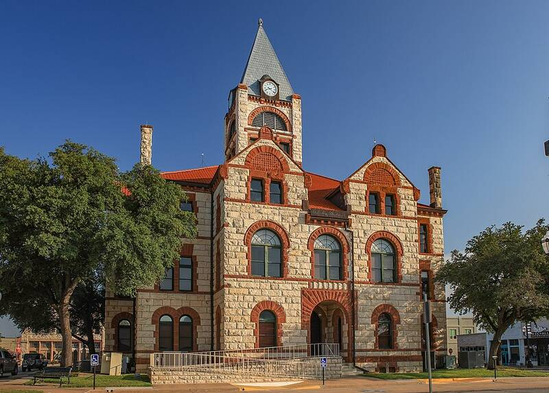

Stephenville sightings
Texas, 2008

Dozens reported a large, silent object with bright lights. 1
Open in the interactive Watcher
Sources
- Stephenville, Texas (2008 UFO sightings) Wikipedia
Texas, 2008

Dozens reported a large, silent object with bright lights. 1
Open in the interactive Watcher